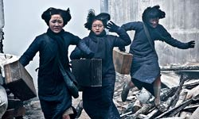
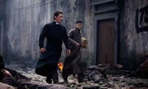
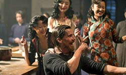
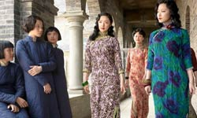
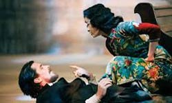
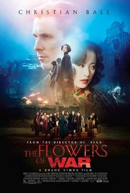
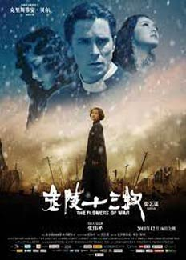
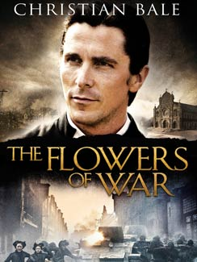
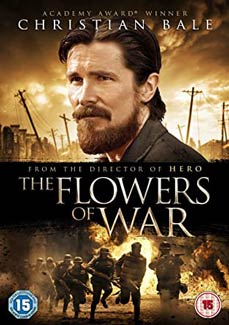
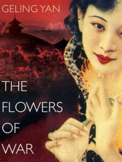

The film is based on a novella by Geling Yan, "13 Flowers of Nanjing", which was inspired by the diary of Minnie Vautrin. The story takes place during the highly controversial incidents of the 1937 Nanjing Massacre. A group of Chinese people, including prostitutes, students and soldiers, find shelter in a Catholic church, as they try to avoid the Japanese army. A foreign mortician, John, who is tasked with preparing the burial for the head priest, also arrives at the place. Being the only man there, he finds himself being the protector of all the women.

The film features impressive cinematography, with the cathedral and the surroundings presented in outstanding fashion, while Ni Ni as the leader of prostitutes gives a great performance that netted her the Best Newcomer Award at the Asian Film Awards. Christian Bale, on the other hand, has an inelegant part as the drunken mortician who turns into a hero, and the film eventually ends up as an "exercise on impression, but without any depth". At the same time, many accused the film of featuring anti-Japanese propaganda.



The dialogue of the film was shot about 40% in English and the rest in Mandarin Chinese (particularly in the Nanjing dialect, distinct from Standard Chinese) and Japanese, with an estimated production budget of $94 million, which made it then the most expensive film in Chinese history. To distinguish the film from previous depictions of the same subject, Zhang said that he tried to portray the Japanese invaders with multiple layers. He articulated that his biggest, though challenging, accomplishment in the film was the creation of John Miller, saying that "this kind of character, a foreigner, a drifter, a thug almost, becomes a hero and saves the lives of Chinese people. That has never ever happened in Chinese filmmaking, and I think it will never happen again in the future." One challenging aspect was what Zhang called the "very slow pace" of negotiation with the Chinese censorship authorities during the editing process.



Much negative feedback from critics were similar to that from The Toronto Star, which said that "the drama is often weakened by the penchant for creating spectacles." Roger Ebert, took issue with making the story about a white American, "Can you think of any reason the character John Miller is needed to tell this story? Was any consideration given to the possibility of a Chinese priest? Would that be asking for too much?"

